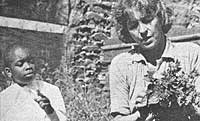
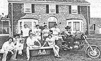

In celebration of little-known MOTHER-type folks from all over.
MARNY SMITH: GARDENING WITH CONSCIENCE
The Save the Children foundation's staff environmentalist-Marny Smith-has established a 250-square-foot demonstration biodynamic/French intensive garden next to the organization's Westport, Connecticut headquarters. Her vegetable plot-which flourishes on a piece of land that was at one time blacktop driveway-has yielded a total of 1,090 pounds of produce over the past three years. Marny's project has played an important part in Save the Children's community development program, too . . . and staffers are currently being trained in "the method" in preparation for assignments as field instructors. In fact, the group just completed a program of teaching the low-energy/high-yield gardening techniques to the Carib Indians on the island of Dominica.
Among Ms. Smith's many credits is a booklet entitled Growing Your Own Food (send $2.50 to Save the Children, Dept. TMEN, 54 Wilton Road, Westport, Connecticut 06880), which contains a two-year record of the demonstration garden and a section describing ways to apply the techniques used there in communities throughout the world. Marny's second book, Gardening With Conscience, is scheduled for publication sometime this summer and will be available for $3.95 (postpaid) from Seabury Press, Dept. TMEN, 815 Second Avenue, New York, New York 10017.- Carlie Quasnosky.
RICHARD ALLEN: BACK-TO-BASICS BEEF
A few miles south of Boswell's Tavern, Virginia lie 600 acres of rolling land, upon which Richard C. Allen has been breeding organically fed Black Angus cattle for the past 26 years. Since Allen doesn't approve of the chemical content of commercial feed and is dedicated to raising lean beef that's low in cholesterol, his animals feed only on hay in the winter and pasture in the summer . . . and receive no grain fattening at all.
Richard's pasture-grass hay contains almost as much protein-12 to 13%-as the best alfalfa, but this wasn't always the case. When Allen purchased his farm back in 1955, the soil was in terribly poor condition, and-as a result-his beef-bearers developed every disease in the book. So Richard started enriching the earth, by spreading his pastures-once every five years-with a 10-ton-to-the-acre mixture of chicken manure and eggshells. . . and his farmland soon became some of the finest in the area.
"After that," the 66-year-old rancher contends, "it wasn't necessary to have a veterinarian on the place for 15 years." And the health and vitality of Allen's herd are confirmed by the fact that his cows commonly bear calves, and nurse, until they're past 20 years old. This success, says the cattleman, can be attributed to one basic rule of thumb: First and foremost, fulfill the needs of the soil!-Paul Fleisher.
OSCAR MANN: AFRICAN EDUCATOR
Born on a dairy farm in Kenya, 31-year-old Oscar Mann has spent most of his life showing rural Africans how to do more with less. As a boy, he watched his veterinarian father teach Kenyans to integrate livestock and food production with beekeeping, leather tanning, and other related pursuits . . . and Oscar often assisted his dad with such instruction. Since then, Mann has dedicated his time to educating villagers in the basic skills that are necessary in order to be self-sufficient.
Working in conjunction with the International Agency for Cooperation and Research in Development, Oscar has been training Africans in toolmaking, metalwork, leathereraft, gardening, and mechanics . . . as well as in the construction of simple, inexpensive devices such as solar corn dryers and cement storage receptacles for water or grain. (The tanks have helped eliminate the need for daily trips to a distant water source, and have preserved food that, otherwise, might have been lost to pests.)
Oscar's accomplishments can be attributed-in large part-to the fact that he is a doer. "If you feel strongly about appropriate technology and the environment," he explains, "you can't just sit in the outhouse and grumble about it"- Roger Mann.
ALPHA DELTA FRATERNITY: THERE'SA PARTY GOING ON
College fraternities are very seldom thought of as good examples of conservation and energy consciousness, but the tables have been turned by Washburn University's Alpha Delta Fraternity in Topeka, Kansas.
It all started when house members realized that the more money they saved through energy conservation, the more cash they'd have available for partying (a discovery that provided them with all the incentive they needed!). So the group used funds provided by Alpha Delta's alumni association to replace all defective storm windows and broken windowpanes, install storm doors at all seven exits, insulate the building's attic, sweep the chimney, and restore a faulty fireplace damper to working order.
In addition, the boys determined to make a number of house changes themselves. They all voted to keep the thermostat at 64° in winter and 80° in summer . . . pledges agreed to work with the house manager to caulk windowsills . . . and everyone pitched in to replace the numerous yard spotlights with a pair of 60-watt bulbs, install dimmer switches in the hallways and rooms, and collect and recycle aluminum cans and newspapers.
These days, Alpha Delta Fraternity members have a constant eye out for new and better methods of conservation, but the brothers have already come quite a long way toward eliminating wastefulness and softening their impact on the environment.- ToddD. Epp, Alpha Delta Fraternity President.
IN BRIEF. . .
Environmental geologist EARL OLSON uses scrounged pieces of junk to help the U.S. Forest Service measure the stability of land. Earl's simple devices-which perform nearly as well as does expensive electronic equipment-include a pair of tongue depressors glued to a clothespin, a tape measure hooked to a nail that's driven into a tree, and a mousetrap that will spring when the shifting earth pulls its wire!
Thirteen years ago J.D. KISER and his uncle, ROBERT KISER, gave up their jobs as millwrights and formed Empire Company . . . a Michigan-based partnership dedicated to restoring abandoned hydroelectric generators. Their firm (it boasted $75,000 worth of business during its first 12 months) has grown into a $2,000,000-a-year enterprise!
Thanks to GARY WHYTE of Milwaukie, Oregon, there is now an easy-on-the-back way to work ground crops: a motorized cart called "the turtle", which allows its operator to lie face down, guiding the device by means of pedals . . . as he or she moves along each row, planting, pruning, thinning, spraying, or harvesting. A conveyor belt carries picked produce to a container behind the vehicle . . . which, according to Whyte, can be used effectively with any ground crop smaller than ahead of lettuce.- JV.
|
 |
 |
|